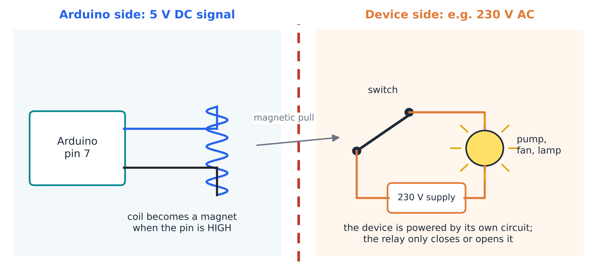
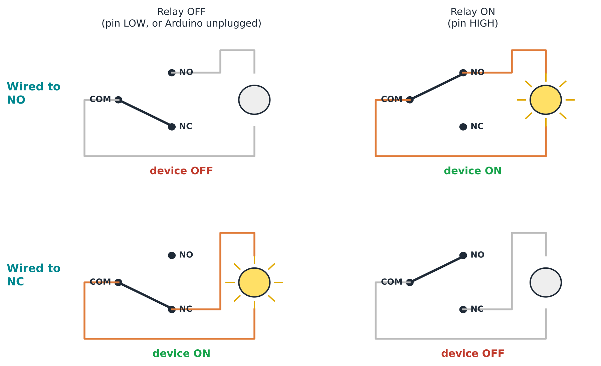
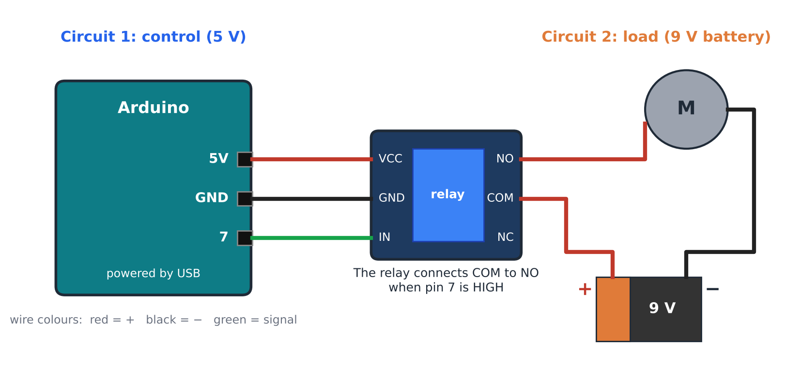

Relays: controlling real-world devices
Last updated on 2026-11-27 | Edit this page
Estimated time: 35 minutes
Overview
Questions
- Why can’t we connect a pump or a lamp directly to an Arduino pin?
- What is a relay and how does it keep two circuits separate?
- How do I read the specifications of a relay?
- What is the difference between normally open and normally closed?
Objectives
- Explain why low-voltage boards need a relay to control high-voltage devices
- Read the label and the connections of a relay module
- Wire a relay module and control it from a digital pin
- Choose between normally open and normally closed wiring for an agricultural device
Why we need relays
So far we have switched an LED on and off. But what if we want to switch on a lamp, a fan, a water pump, a heating system or a dryer? These are much heavier loads, and they cannot be connected to the Arduino the way we connected the LED. In the worst case this starts a fire; in the best case it destroys the board.
The reason is that the microcontroller unit (MCU), whether an Arduino or an ESP32, works in a completely different range from real-world devices:
| Microcontroller (MCU) | Real-world devices | |
|---|---|---|
| Voltage | 3.3–5 V direct current (DC) | 120–250 V alternating current (AC), or 12–24–48 V DC |
| Current | very low (max. ~20 mA per pin) | often 1–10 A |
Think of voltage as the pressure of water in a pipe. The 5 V of an Arduino is a gentle pressure. The 230 V of a wall socket is a pressure that would burst our pipes.
Arms and muscles
If the microcontroller is the logic brain, relays are the physical arms and muscles that let it control higher-voltage devices.
How a relay works
A relay is a switch operated by electricity. Inside the box there are two separate parts:
- A coil. When the Arduino sends a 5 V signal, the coil becomes a magnet.
- A switch. The magnet pulls it, and it closes (or opens) the circuit of the device. You can hear it: every time the relay switches, it clicks.

The two circuits never touch: the relay creates an electrical separation between the MCU and the high-voltage circuit. The device is still powered by its own circuit. We are sending a signal, we are not powering the device: the Arduino only opens and closes the switch.
Reading the label
Before using a relay, read its technical specifications. They are printed, very small, on the blue box. A common relay reads:
| Printed on the relay | Meaning |
|---|---|
10A 250VAC |
Can switch up to 10 A at up to 250 V AC (wall sockets in Europe, Africa, most of Asia) |
10A 125VAC |
Can switch up to 10 A at up to 125 V AC (wall sockets in the Americas) |
10A 30VDC |
Can switch up to 10 A at up to 30 V DC (e.g. 12 or 24 V systems) |
SRD-05VDC-SL-C |
05VDC: the relay is triggered by a 5 V signal |
The last line is the one that matters most for us: it tells us which signal voltage switches the relay.
3.3 V boards
Some MCUs, such as the ESP32, can only send signals of 3.3 V. With them, either buy a relay module that is triggered at 3.3 V, or use a logic level converter: a small additional board that turns a 3.3 V signal into a 5 V one.
Buy the module, not the bare relay
Always look for a relay module: the relay already mounted on a small board with the components that let a pin switch it safely and protect your board, and often an LED showing whether it is on. Bare relays are cheaper, but need all those extra components built around them.
The two sides of a relay module
Every relay module has two sides: one that goes to the Arduino, and one that goes to the device.

| Side | Connection | Connect to |
|---|---|---|
| Low voltage (Arduino) | VCC | 5V of the Arduino (powers the relay) |
| GND | GND of the Arduino | |
| IN (signal) | a digital pin, e.g. pin 7 | |
| High voltage (device) | COM (common) | one end of the wire you want to switch |
| NO (normally open) | the other end: the device is off until the relay switches | |
| NC (normally closed) | the other end: the device is on until the relay switches |
To control a device, we interrupt one of its wires. One end goes into COM, the other into NO or NC. The relay then closes or opens the gap.
Normally open or normally closed?
“Normally” describes what happens when the relay is not powered: when the pin is LOW, or when the Arduino is switched off or unplugged.

- NO (normally open): the circuit is open, so the device is off by default. It runs only while the Arduino switches the relay on.
- NC (normally closed): the circuit is closed, so the device is on by default, even when the Arduino is off. The Arduino switches it off.
A counterintuitive name
“Normally open” sounds like “on”, but it means the circuit is open: nothing flows. This is the safe choice. If the controller or its power fails, pumps, heaters and cooling systems switch off rather than staying on. NC is useful when a device must keep running even if the controller fails.
Challenge 1: NO or NC?
For each device, would you wire it to NO or to NC? Think about what should happen if the Arduino stops working.
- An irrigation pump
- A greenhouse heater
- The ventilation fans of a poultry house
- Irrigation pump: NO. If the controller fails, the pump stops instead of flooding the field and wasting water.
- Greenhouse heater: NO. A heater that cannot be switched off is a risk of overheating the crop, or of fire.
- Ventilation fans: it depends. With NC, the fans keep running if the controller fails, which protects the animals from heat and poor air. There is often no single right answer: ask yourself which failure is the less dangerous one.
Types of relays
- Electromagnetic relays (the blue box in your kit): a coil and a mechanical switch. They can switch heavy loads and are very reliable, but they are not made to switch many times per second.
- Solid-state relays (SSR): no moving parts, silent and fast. The common low-cost modules only switch AC, and handle smaller loads.
Both come as modules with 1, 2, 4, 8 or 16 relays.
In greenhouses or poultry farms we rarely need fast switching, but we do need something reliable that can manage heavy loads. That is why electromagnetic relays are usually the right choice.
Hands-on: switching a motor
We build a scale model of a real installation: two separate circuits.
- Circuit 1, control: the Arduino, powered by the computer, and the low-voltage side of the relay.
- Circuit 2, load: a small motor, powered by its own 9 V battery, through the high-voltage side of the relay.

- Connect the relay’s VCC to 5V, GND to GND, and IN to digital pin 7.
- Connect the battery’s + to COM.
- Connect NO to one terminal of the motor.
- Connect the motor’s other terminal to the battery’s −.
Wire colours
Always use the same colours for the same role, so you can read a circuit at a glance: red for +, black for −, and a bright colour for signals.
The code is the same as the Blink example (File → Examples → 01.Basics → Blink): only the pin changes. Notice the comment block at the top: describing the goal and the wiring at the start of every sketch is a good habit.
C
/*
Relay blink
Switches a relay on and off every two seconds.
Circuit: relay module VCC -> 5V, GND -> GND, IN -> digital pin 7
*/
const int RELAY_PIN = 7; // digital pin connected to IN
void setup() {
pinMode(RELAY_PIN, OUTPUT); // the pin sends a signal
}
void loop() {
digitalWrite(RELAY_PIN, HIGH); // relay on: listen for the click
delay(2000); // wait 2 seconds
digitalWrite(RELAY_PIN, LOW); // relay off
delay(2000);
}Remember to select the right board and port before uploading.
Challenge 2: from NO to NC
- Upload the sketch. What do you hear and see on the relay module?
- Move the motor wire from NO to NC. What changes?
- With the wire on NC, unplug the Arduino’s USB cable. What does the motor do?
- The relay clicks every two seconds and its LED (if it has one) turns on and off. The motor runs while the relay is on.
- The rhythm is reversed: the motor now runs while the relay is off.
- The motor keeps running: it is powered by its own battery, and with NC the circuit stays closed when the relay is not powered. With NO, it would stop.
Controlling mains devices
The same principle works for devices plugged into a wall socket: lamps, pumps, fans. During the session, the instructor demonstrated it with a lamp, using the example File → Examples → 02.Digital → BlinkWithoutDelay with a longer interval (5 seconds) on pin 7.
Mains voltage can kill
Working with 230 V is dangerous. Leave it to the instructor or a qualified person, and practise with battery circuits like the one above.
- A mains cable contains three wires: two that carry the current, and the earth (yellow-green). The relay interrupts only one current-carrying wire. The other wire and the earth must stay connected all the way to the device.
- Join and insulate wires with appropriate connectors (for example screw or lever terminal blocks), never with tape alone.
- Keep the relay’s high-voltage terminals inside a closed box, so nobody can touch them.
- Never work on a circuit while it is plugged in.
Relays in finished products
With a relay, almost any device can become controllable: we do not need to buy “smart” devices. During the session, the instructor showed a box with four relays, each controlling one socket, which was used to run the pumps, lights and fans of a hydroponic system. Commercial smart plugs work the same way: inside, a microcontroller drives a relay.
Turning a prototype into a reliable, safe product is a topic of its own, and is covered in a separate unit.
Key Points
- Microcontrollers work at 3.3–5 V with very small currents; real-world devices need far more, so never connect them directly.
- A relay is a switch operated by electricity: a coil on the Arduino side moves a switch on the device side, and the two circuits stay separate.
- Read the label: the maximum loads the relay can switch, and the voltage that triggers it (05VDC = 5 V).
- The Arduino side has VCC, GND and IN; the device side has COM, NO and NC.
- Normally open means off by default and is usually the safer choice; normally closed means on by default.
- The Arduino sends a signal; the device is powered by its own circuit.